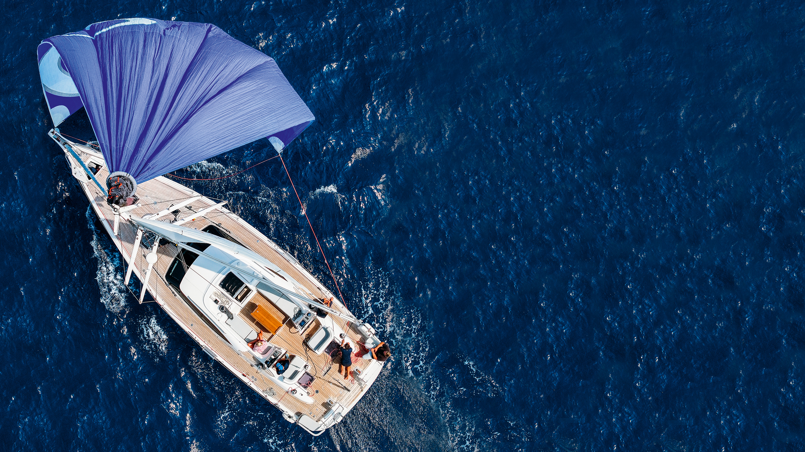
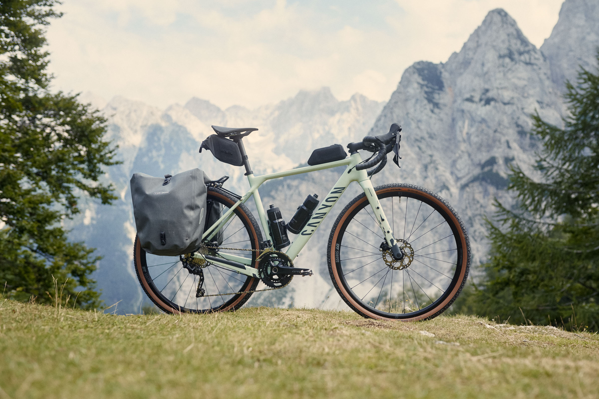

La Nostra Gloriosa Odissea

L'immensità dell'oceano ci attende: la prossima grande sfida.
Allacciate le cinture! GG e Paco stanno per intraprendere un'odissea che riscriverà le regole dell'esplorazione e del bikepacking... o almeno, ci proveranno, speriamo con stile. Dal cuore pulsante dell'Europa, questi due intrepidi avventurieri scateneranno le loro fidate bici e tavole da surf in un tour de force via terra e mare, pronti a collezionare culture esotiche e panorami da cartolina.
La nostra filosofia di viaggio? Più che un piano, è un manifesto allo slow travel e alle sfide al limite. Una dichiarazione d'intenti che abbraccia l'imprevisto, l'ingegno e la profonda connessione con i luoghi e le persone, privilegiando la forza delle loro gambe e mezzi a basso impatto per muoversi nel mondo, evitando il più possibile gli aerei.
- Europa Express, con la Calma dei Campioni: Da Milano, un inizio accompagnati da altri giovani amici verso Grenoble, assaporando il Vecchio Continente e testando l'attrezzatura.
- Scalate Epiche (e Forse Poco Sensate): L'ardua impresa di valicare un importante passo alpino con tavole al seguito, per planare (si spera interi) su Grenoble. La discesa sarà un vero test alle capacità di conduzione della bicicletta dei ragazzi! Per i tempi stretti è possibile che la parte francese sarà fatta in autobus/treno perchè le Canarie chiamano il primo novembre.
- Cavalcando l'Atlantico Iberico (e le Salite): Pedalando come se non ci fosse un domani da San Sebastián lungo le coste selvagge di Spagna e Portogallo, alla ricerca di spot da urlo, onde perfette e, possibilmente, un posto dove montare la tenda.
- Rotta per i Caraibi: Da Las Palmas de Gran Canaria, si proverà a intrufolarsi nella flotta dell'ARC (Atlantic Rally for Cruisers) il 23 Novembre 2025, oppure con altri disperati che cerchino equipaggio. L'obiettivo: trovare un imbarco direttamente sui pontili o tramite contatti improbabili. Pronti ad attraversare l'Atlantico veleggiando verso Saint Lucia, probabilmente lavando i piatti per tutta la traversata.
- Sogno Pacifico: Due Destini, Stessa Follia:
- Opzione A - Traversata Oceanica da veri Lupi di Mare (o quasi): Dai Caraibi, un passaggio 'al volo' via mare per Panama. Da lì, l'immensità del Pacifico: un'avventura di pura navigazione verso perle come le Galápagos e le isole della Polinesia Francese, affidandosi al buon cuore delle onde, dei venti e di chiunque abbia una cuccetta libera.
- Opzione B - Radici Sudamericane e Polpacci d'Acciaio: Un passaggio marittimo dai Caraibi all'Ecuador segnerà l'inizio di una LUNGA pedalata. Giù per la costa Pacifica del Sudamerica, inseguendo onde mitiche, attraversando deserti e montagne che metteranno alla prova anche i più stoici. Un'immersione nel cuore pulsante del continente fino al Cile, o finché le nostre gambe reggeranno.
Dimenticate le tabelle di marcia precise: questo è più un manifesto al viaggio vissuto con spirito indomito e adattamento totale, un brindisi all'imprevisto che diventa la norma, a un'esplorazione che rispetta i ritmi della natura e delle culture, e un tributo a ogni singola, strampalata, meravigliosa connessione umana. Restate sintonizzati, perché il bello deve ancora venire (e probabilmente non andrà come previsto)!
L'Arsenale dei Sognatori: Bici, Surf & Tenda
L'essenza di un'avventura così particolare risiede anche nella genialità della semplicità e in un pizzico di spirito d’adattamento. Per affrontare le lunghe tratte costiere, noi SaltRiders abbiamo scelto bici gravel equipaggiate con supporti laterali dedicati per trasportare le nostre amate tavole da surf. Questo sistema ingegnoso ci permette di essere agili come gazzelle (carichi come muli) ma con il pregio di avere tutto con noi sulla bici.

Il nostro assetto da SaltRiders: bici, tavola e orizzonti infiniti.
Il supporto è leggero ma resistente, e se il vento laterale si farà sentire… fa parte dell’avventura. Con loro anche una tenda compatta, per fermarci dove capita e dormire sotto le stelle, pronti a ripartire all’alba con la fedele compagna d’onda sempre al loro fianco, come un’appendice aerodinamica un po’ sbilenca ma indispensabile.

La nostra fidata compagna a due ruote, pronta ad affrontare ogni tipo di terreno.